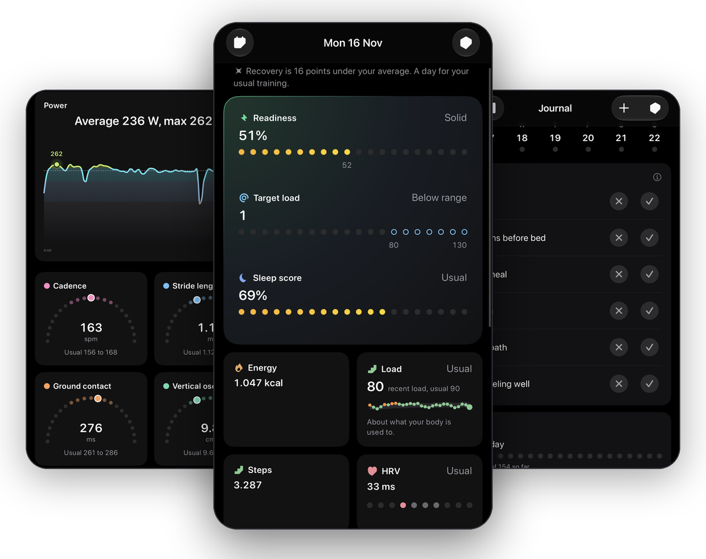
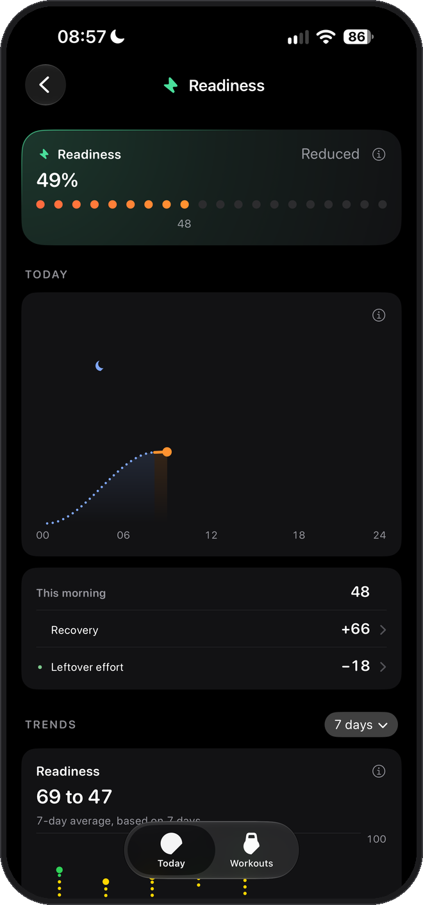
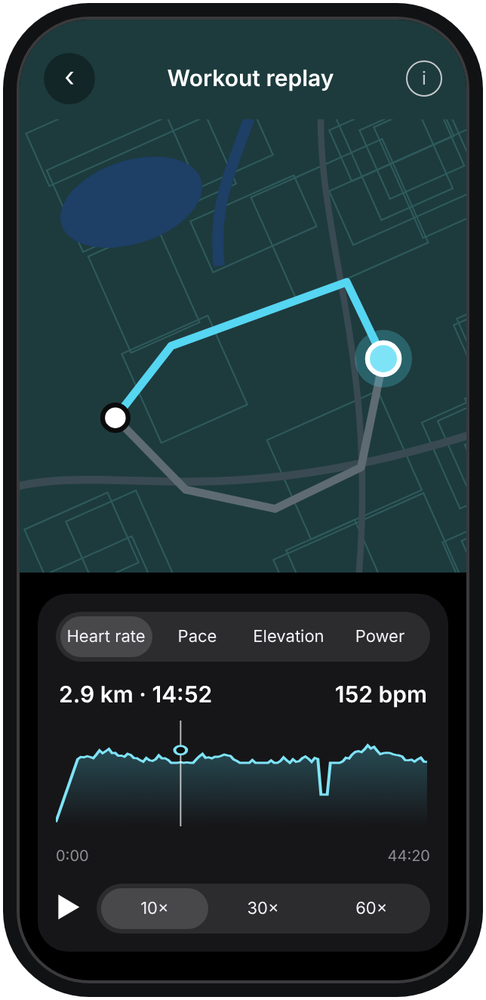
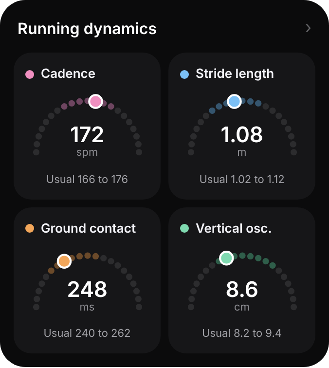
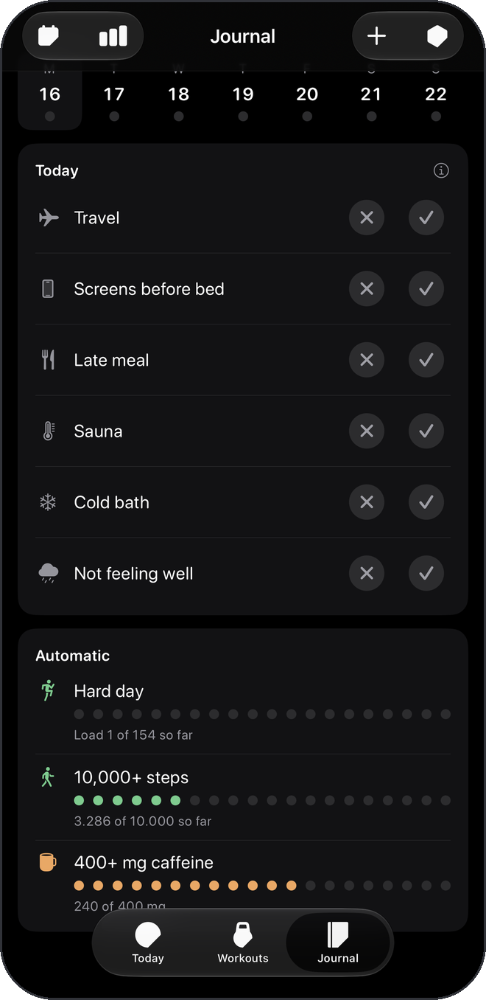
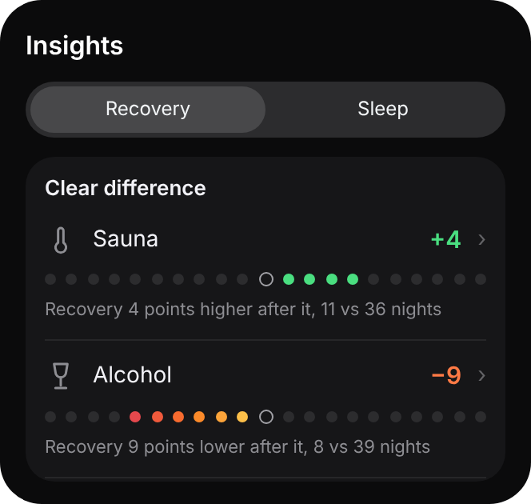
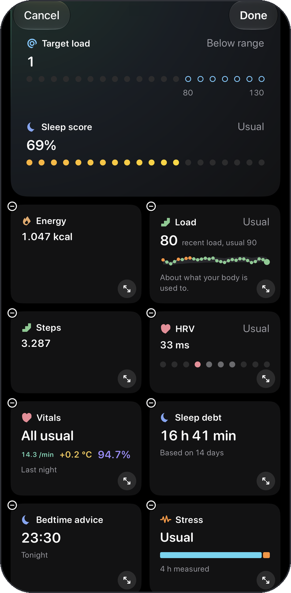

iPhone and Apple Watch · Public beta
Heavy lifts count. Even when your heart rate doesn't.
A readiness score for everyone who does more than steady cardio. It drains with training and recharges with sleep, and the effort you rate on your watch counts wherever heart rate falls short.

Your effort counts
A hard session counts as hard, even if your heart rate never climbed.
Heart rate measures steady cardio like running, cycling, rowing or swimming well, so those count by heart rate. For everything else, like strength, HIIT, yoga, climbing or a tennis match, your effort counts too, because heart rate misses part of that work. Leftover effort still lowers your readiness the next morning.

It tells you why
No mystery numbers.
“Recovery is 7 points under your average. Lighter day, up to 50 left of Target load.”
Every score shows what moved it, how it compares with your usual, and what that means for today.
Workouts
Analyze workout data.
Heart rate zones, heart rate recovery and training load for every workout. Runs add cadence, stride length, ground contact and heart rate drift, each next to your usual range. Workouts with a route get a map and a replay. More is on the way.




Journal
Your habits next to your recovery.
Answer yes or no for things like sauna, a late meal or screens before bed. Steps, hard days and caffeine are filled in from Apple Health. Once there are enough nights, Throttle shows which tags go with a higher or lower recovery.
Make it yours
Your Today, your way.
Hide the cards you don't need and move the ones you check most to the top. Pick any earlier day in the calendar to see how it looked.

Built around training and recovery
For everyone who does more than steady cardio, and just as complete for runners. Training status, load ratio and VO2 max next to your sleep and heart rate.
Private by design
Your health data and your scores stay on your iPhone. No account, no server, no analytics, ads or tracking. Maps and weather go through Apple, without your health data.
Free during the beta.
Beta testers get 3 months free when Throttle launches on the App Store. Needs an iPhone and an Apple Watch.
Join the free beta on TestFlightFeedback and updates in r/ThrottleHealth
Throttle gives insights for training and recovery. It is not medical advice.